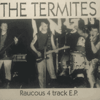

the Termites - Raucous 4 Track E.P. (EP, 1989)
01 - Every Time (2:53)
02 - Rock All Night (2:15)
03 - Home Sweet Home (2:35)
04 - Long Time Now (2:41)
© Raucous Records :: [RAUC008]
Notes
Kilmarnock, Scotland, United Kingdom.
Ewin (Ewin Murray)
Bally (Scott Ballantyne)
Kenny
Gez (Gerry Doyle)
Recorded at Centre City Sounds Studios, Glasgow
reference information: Discogs®
Review
246/366 (Project 366)
Interesting, aggressive Psychobilly and some forms of alternative Rockabilly with a very interesting sound. Really furious rocking and rolling with mad Punk-Rock.
The first track "Every Time" turned out to be really punchy and somewhat groovy song. Strong base, hilarious singing and crazy mood. Very old fashioned Psychobilly with a Punk'N'Roll flavor. Great enough to be energized! The second track "Rock All Night" is also very loud, very mad and somewhat Garage rockin' and rollin' craze. Just off the charts! Surely the hit! At least, of rockin' punky madness. The third track "Home Sweet Home" - wild tune and heavy song with hard rockin' and rollin' psycho mad tone. Quite a pretty and impressive guitar component. But, of course, especially on these recordings the vocalist and his energy stand out. Very expressive and even artistic. The fourth track "Long Time Now", as all other songs, is somewhat raw, with lovely untamed guitars and smooth crazy rhythm, hard, tough, dynamically, unrestrained psycho hard-bitten sound. Great...